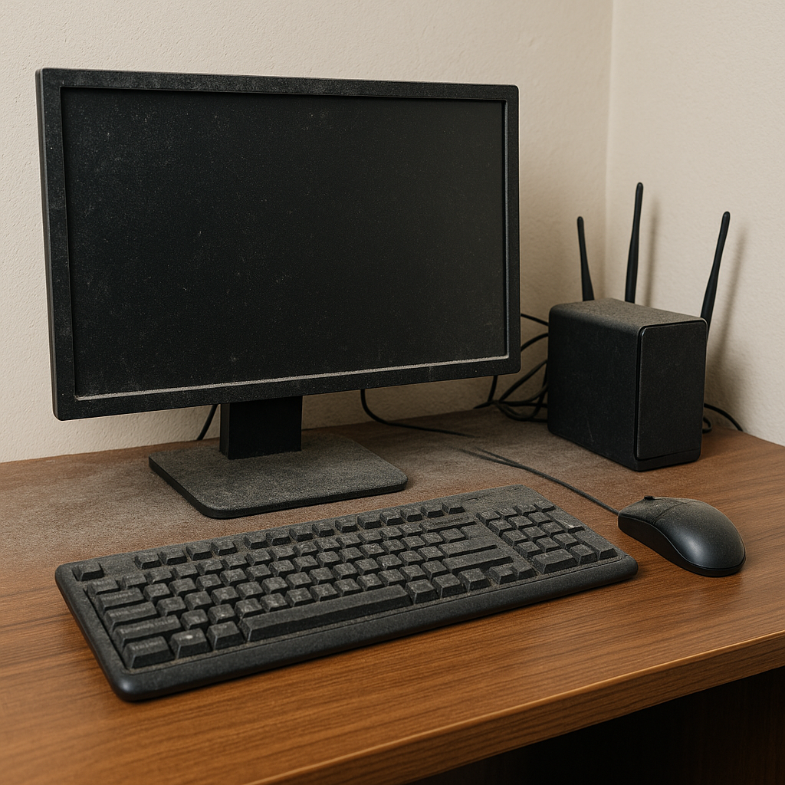

The Dust Behind Your Monitor Isn’t Innocent
It’s quiet. It’s soft. It looks harmless. But that dust behind your monitor is slowly changing the thermal dynamics of your workspace. It’s not just mess — it’s *insulation* for entropy.
Diagnosis: Thermodynamic Drift
Dust is a heat trap. As it coats vents, fans, and power adapters, it forces your devices to work harder. That means more heat, reduced component lifespan, and unexpected slowdowns — even crashes.
Clues That Your Dust Is Acting Up
- Fan noise spikes: especially under light workloads.
- Hot power bricks: warmer than usual to the touch.
- Stale smell near the monitor: especially if airflow is poor.
- Visible dust rings: behind or under your monitor, router, or surge protector.
- System lag after prolonged use: thermal throttling in action.
Countermeasures: The Dust Reversal Kit
Don’t just wipe the screen — purge the entropy where it hides. Behind, beneath, and inside.
The Fix
- Dust monthly behind every major desk electronic — not just the monitor.
- Elevate power bricks and remove rugs near them.
- Keep cables bundled and off the floor — they attract hair and debris.
- Use positive airflow — small fan at floor level can disperse buildup.
- Schedule it — because dust never takes a break, but you will.
The most dangerous entropy is what you never see. Until your fan screams, your screen stutters, or your workspace smells... warm. Grab a duster. You’re not just cleaning — you’re debugging time itself.
As an Amazon Associate, Low Entropy Detective earns from qualifying purchases.